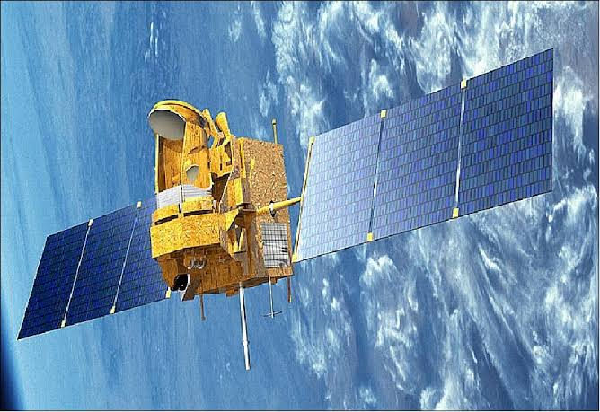
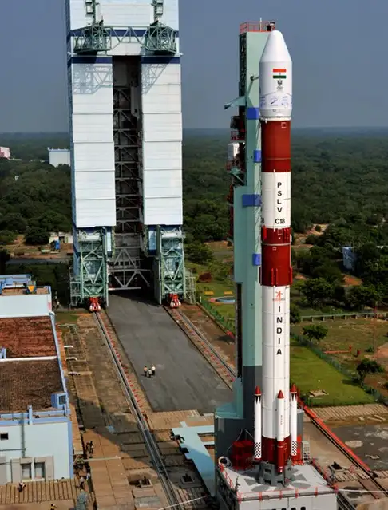
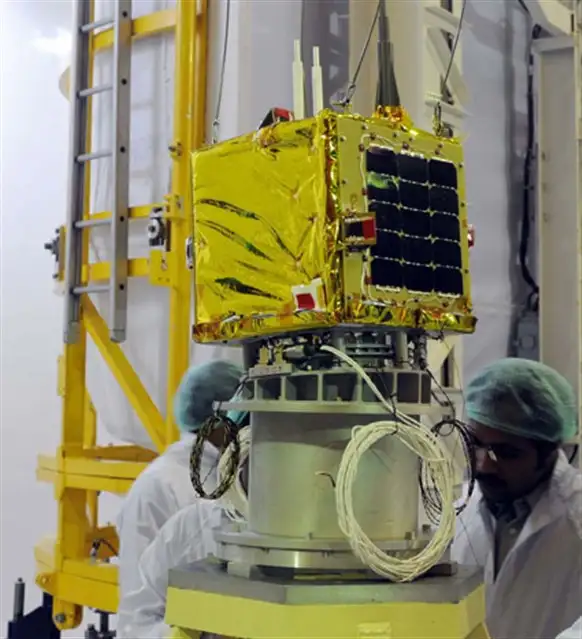

MEGHA-TROPIQUES
Megha-Tropiques was a satellite designed to learn more about how water moves through the air in the tropics and how this might be affected by changes in the climate. It was a project worked on by both the Indian Space Research Organization (ISRO) and the French Centre National d’Etudes Spatiales (CNES). In October of 2011, the satellite was sent up into space using a special kind of rocket called a PSLV.
The equipment on Megha-Tropiques could study three different parts of the atmosphere at the same time: water vapor, clouds and rain, and energy from the sun. This made it easier to study the same area over a long time. One of the machines on the satellite, called Multi-frequency Microwave Scanning Radiometer (MADRAS), worked together with other machines that were part of a bigger project called the Global Precipitation Measurement mission.

Megha-Tropiques
Launch:
Megha-Tropiques was put into space by the Indian Space Research Organisation on October 12, 2011, using a special kind of rocket called the Polar Satellite Launch Vehicle (PSLV-C18). The rocket was launched from a place called Satish Dhawan Space Centre, which is located in Sriharikota, India. Megha-Tropiques was put into an orbit about 867 km (539 miles) above Earth, at an angle of 20 degrees to the equator. The rocket also carried three smaller satellites along with it: SRMSAT, Jugnu, and VesselSat-1.

PSLV-C18 Launch Vehicle Of Megha-Tropiques

Nano Satellite SRMSAT
End of mission
When Megha-Tropiques was sent to space, its planned mission was to last for three years. However, the mission was extended by two years in 2015, and then by four more years in 2016. But in April 2022, the Indian Space Research Organisation (ISRO) said the mission was coming to an end because of a problem with the way the satellite was pointing. Megha-Tropiques was orbiting at a height of 870 km, but it was supposed to be brought down to 300 km so it could be safely disposed of.